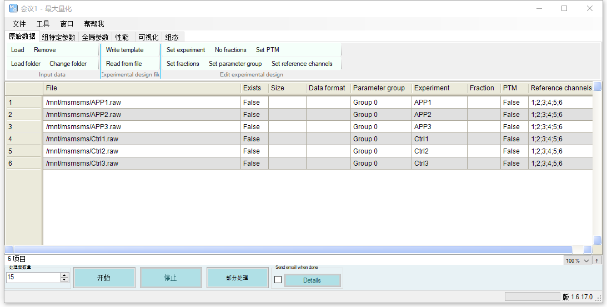
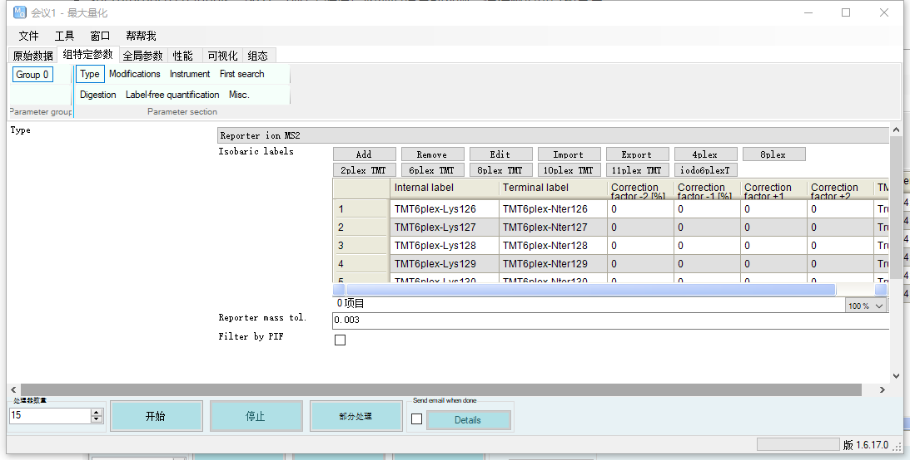
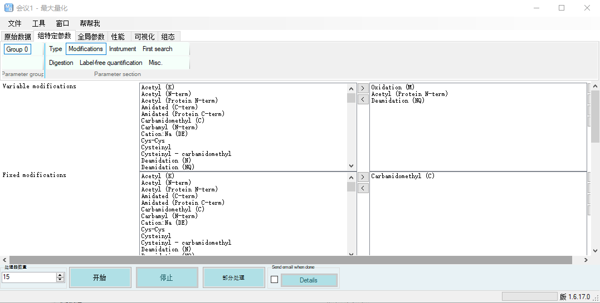
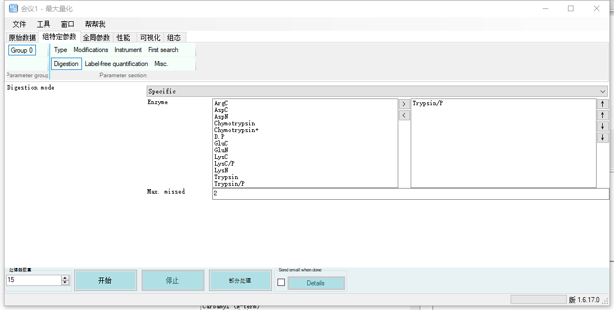
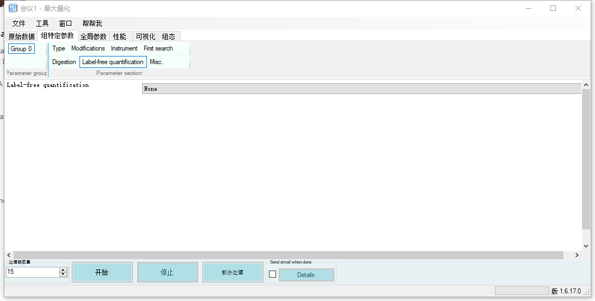
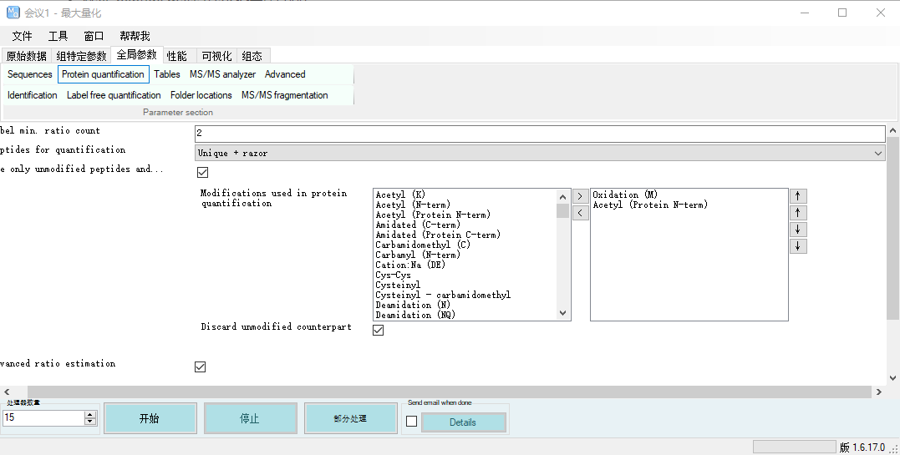
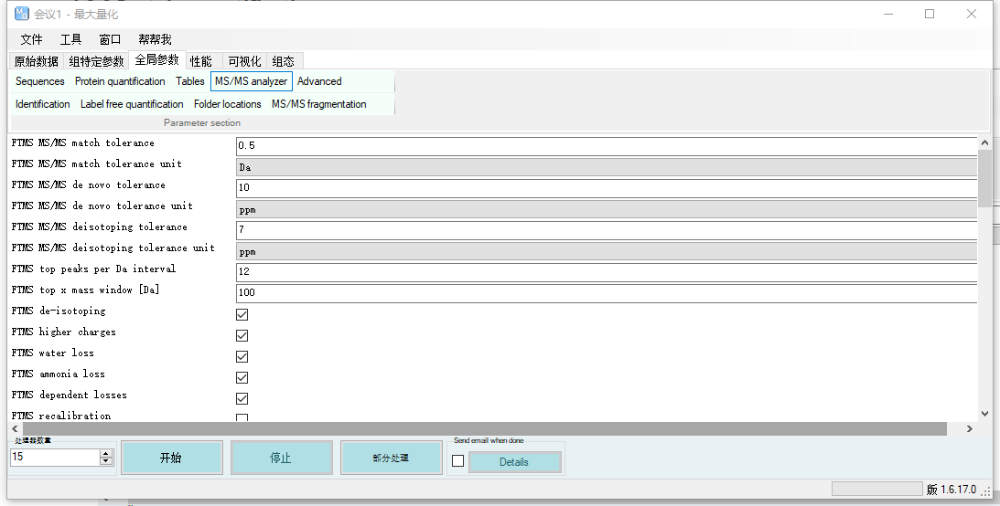
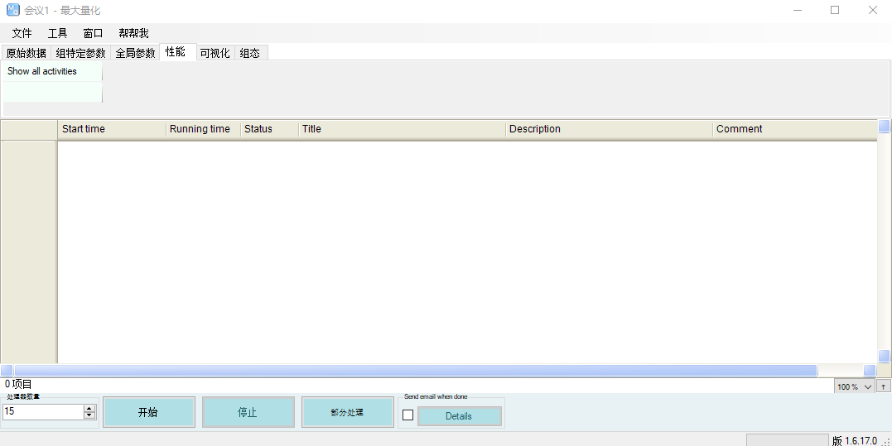

TMT蛋白组学：上游分析
顾名思义，上游分析即从质谱raw文件中得到蛋白定量的矩阵，无论是windows还是linux，都需要在windows的软件内设置以下的参数
1. 参数设置
对于我没提到的参数，都保持默认即可
1.1 原始数据窗格
- Set experiment：对每一个样本设定实验内容，每个实验作为一个单独的输出
- Set reference channels：这个是TMT串联质谱必须要设置的参数，使得标记可以被分离
- Set parameter group：如果你的实验有多个组别可以设置，但一般多组别会分开跑

1.2 组特定参数窗格
1.2.1 Type
- 对于TMT6plex，我们选择Reporter ion MS2作为类型、
- Isobaric：我们选择6plex TMT

1.2.2 Modification
- Variable modifications: 选择Oxidation（M），Acetyl（Protein N-term），Deamidation（NQ）
- Fixed modification：选择Carbamidomethyl（C）

1.2.3 Digestion
- Digestion mode：Specific
- Enzyme：Trypsin/P（实验使拿什么酶消化就选什么）
- Max. missed：设置成2即可

1.2.4 Label-free quantification
设置成None

1.3 全局参数窗格
1.3.1 Sequence
- Fasta files：选择你要搜的蛋白质库，在这里，我们选择从Uniprot上的Mus全蛋白库
- Min. peptide length: 设置成7，太低会出现误差
- Max. peptide mass [Da]: 设置成6000

1.3.2 Protein quantification
select Use only unmodified peptides and a list of modifications such as Oxidation (M), Acetyl (Protein N-term) and Deamidation.

1.3.3 MS/MS analyzer
- a. FTMS MS/MS match tolerance: 0.05 Da
- b. ITMS MS/MS match tolerance: 0.6 Da

2. 搜库（获取表达矩阵）
在上述环节，我们已经设置好了所有参数，那么我们首先点击文件->保存参数，得到一个mqpar.xml文件
2.1 Windows
我们在左下角设置好处理器的数量，一般设置的比CPU数少1会比较稳定，不会闪退，效率也会最高，然后直接开始即可
开始后性能窗格会显示当前进度，可以点击Details按钮左边的勾查看，也可以点击左上角show all activity查看

2.2 Linux
我们将MaxQuant拷贝到Linux上，首先进入mpqar.xml所在的文件夹，在终端输入
sudo nohup dotnet /home/MaxQuant/bin/MaxQuantCmd.exe mqpar.xml
即可开始运行，其中/home/MaxQuant/bin/MaxQuantCmd.exe为我们拷贝的路径，等待时间24-48小时不等